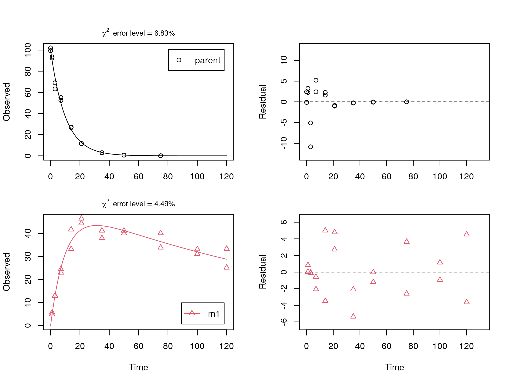
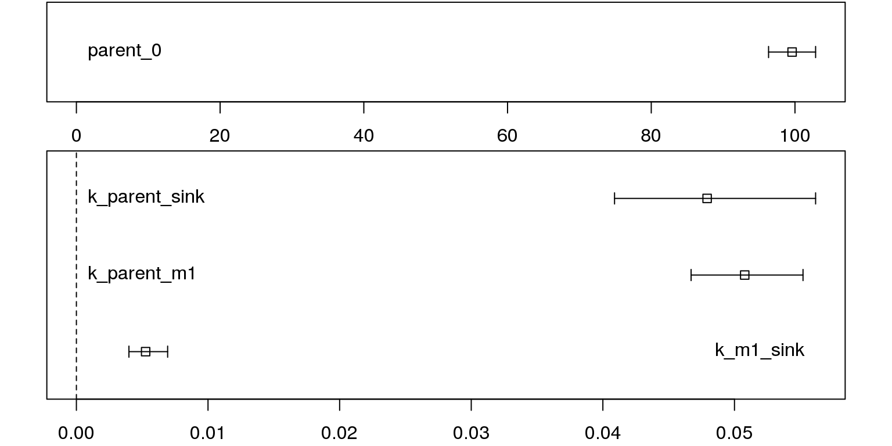

This is just a very simple vignette showing how to fit a degradation model for a parent compound with one transformation product using mkin. After loading the library we look a the data. We have observed concentrations in the column named value at the times specified in column time for the two observed variables named parent and m1.
library("mkin")
print(FOCUS_2006_D)## name time value
## 1 parent 0 99.46
## 2 parent 0 102.04
## 3 parent 1 93.50
## 4 parent 1 92.50
## 5 parent 3 63.23
## 6 parent 3 68.99
## 7 parent 7 52.32
## 8 parent 7 55.13
## 9 parent 14 27.27
## 10 parent 14 26.64
## 11 parent 21 11.50
## 12 parent 21 11.64
## 13 parent 35 2.85
## 14 parent 35 2.91
## 15 parent 50 0.69
## 16 parent 50 0.63
## 17 parent 75 0.05
## 18 parent 75 0.06
## 19 parent 100 NA
## 20 parent 100 NA
## 21 parent 120 NA
## 22 parent 120 NA
## 23 m1 0 0.00
## 24 m1 0 0.00
## 25 m1 1 4.84
## 26 m1 1 5.64
## 27 m1 3 12.91
## 28 m1 3 12.96
## 29 m1 7 22.97
## 30 m1 7 24.47
## 31 m1 14 41.69
## 32 m1 14 33.21
## 33 m1 21 44.37
## 34 m1 21 46.44
## 35 m1 35 41.22
## 36 m1 35 37.95
## 37 m1 50 41.19
## 38 m1 50 40.01
## 39 m1 75 40.09
## 40 m1 75 33.85
## 41 m1 100 31.04
## 42 m1 100 33.13
## 43 m1 120 25.15
## 44 m1 120 33.31Next we specify the degradation model: The parent compound degrades with simple first-order kinetics (SFO) to one metabolite named m1, which also degrades with SFO kinetics.
The call to mkinmod returns a degradation model. The differential equations represented in R code can be found in the character vector $diffs of the mkinmod object. If a C compiler (gcc) is installed and functional, the differential equation model will be compiled from auto-generated C code.
## Successfully compiled differential equation model from auto-generated C code.print(SFO_SFO$diffs)## parent
## "d_parent = - k_parent_sink * parent - k_parent_m1 * parent"
## m1
## "d_m1 = + k_parent_m1 * parent - k_m1_sink * m1"We do the fitting without progress report (quiet = TRUE).
fit <- mkinfit(SFO_SFO, FOCUS_2006_D, quiet = TRUE)A plot of the fit including a residual plot for both observed variables is obtained using the plot_sep method for mkinfit objects, which shows separate graphs for all compounds and their residuals.
plot_sep(fit, lpos = c("topright", "bottomright"))
Confidence intervals for the parameter estimates are obtained using the mkinparplot function.
mkinparplot(fit)
A comprehensive report of the results is obtained using the summary method for mkinfit objects.
summary(fit)## mkin version: 0.9.44.9000
## R version: 3.3.2
## Date of fit: Fri Nov 18 16:48:11 2016
## Date of summary: Fri Nov 18 16:48:11 2016
##
## Equations:
## d_parent/dt = - k_parent_sink * parent - k_parent_m1 * parent
## d_m1/dt = + k_parent_m1 * parent - k_m1_sink * m1
##
## Model predictions using solution type deSolve
##
## Fitted with method Port using 153 model solutions performed in 0.638 s
##
## Weighting: none
##
## Starting values for parameters to be optimised:
## value type
## parent_0 100.7500 state
## k_parent_sink 0.1000 deparm
## k_parent_m1 0.1001 deparm
## k_m1_sink 0.1002 deparm
##
## Starting values for the transformed parameters actually optimised:
## value lower upper
## parent_0 100.750000 -Inf Inf
## log_k_parent_sink -2.302585 -Inf Inf
## log_k_parent_m1 -2.301586 -Inf Inf
## log_k_m1_sink -2.300587 -Inf Inf
##
## Fixed parameter values:
## value type
## m1_0 0 state
##
## Optimised, transformed parameters with symmetric confidence intervals:
## Estimate Std. Error Lower Upper
## parent_0 99.600 1.61400 96.330 102.900
## log_k_parent_sink -3.038 0.07826 -3.197 -2.879
## log_k_parent_m1 -2.980 0.04124 -3.064 -2.897
## log_k_m1_sink -5.248 0.13610 -5.523 -4.972
##
## Parameter correlation:
## parent_0 log_k_parent_sink log_k_parent_m1 log_k_m1_sink
## parent_0 1.00000 0.6075 -0.06625 -0.1701
## log_k_parent_sink 0.60752 1.0000 -0.08740 -0.6253
## log_k_parent_m1 -0.06625 -0.0874 1.00000 0.4716
## log_k_m1_sink -0.17006 -0.6253 0.47163 1.0000
##
## Residual standard error: 3.211 on 36 degrees of freedom
##
## Backtransformed parameters:
## Confidence intervals for internally transformed parameters are asymmetric.
## t-test (unrealistically) based on the assumption of normal distribution
## for estimators of untransformed parameters.
## Estimate t value Pr(>t) Lower Upper
## parent_0 99.600000 61.720 2.024e-38 96.330000 1.029e+02
## k_parent_sink 0.047920 12.780 3.050e-15 0.040890 5.616e-02
## k_parent_m1 0.050780 24.250 3.407e-24 0.046700 5.521e-02
## k_m1_sink 0.005261 7.349 5.758e-09 0.003992 6.933e-03
##
## Chi2 error levels in percent:
## err.min n.optim df
## All data 6.398 4 15
## parent 6.827 3 6
## m1 4.490 1 9
##
## Resulting formation fractions:
## ff
## parent_sink 0.4855
## parent_m1 0.5145
## m1_sink 1.0000
##
## Estimated disappearance times:
## DT50 DT90
## parent 7.023 23.33
## m1 131.761 437.70
##
## Data:
## time variable observed predicted residual
## 0 parent 99.46 9.960e+01 -1.385e-01
## 0 parent 102.04 9.960e+01 2.442e+00
## 1 parent 93.50 9.024e+01 3.262e+00
## 1 parent 92.50 9.024e+01 2.262e+00
## 3 parent 63.23 7.407e+01 -1.084e+01
## 3 parent 68.99 7.407e+01 -5.083e+00
## 7 parent 52.32 4.991e+01 2.408e+00
## 7 parent 55.13 4.991e+01 5.218e+00
## 14 parent 27.27 2.501e+01 2.257e+00
## 14 parent 26.64 2.501e+01 1.627e+00
## 21 parent 11.50 1.253e+01 -1.035e+00
## 21 parent 11.64 1.253e+01 -8.946e-01
## 35 parent 2.85 3.148e+00 -2.979e-01
## 35 parent 2.91 3.148e+00 -2.379e-01
## 50 parent 0.69 7.162e-01 -2.624e-02
## 50 parent 0.63 7.162e-01 -8.624e-02
## 75 parent 0.05 6.074e-02 -1.074e-02
## 75 parent 0.06 6.074e-02 -7.382e-04
## 100 parent NA 5.151e-03 NA
## 100 parent NA 5.151e-03 NA
## 120 parent NA 7.155e-04 NA
## 120 parent NA 7.155e-04 NA
## 0 m1 0.00 0.000e+00 0.000e+00
## 0 m1 0.00 0.000e+00 0.000e+00
## 1 m1 4.84 4.803e+00 3.704e-02
## 1 m1 5.64 4.803e+00 8.370e-01
## 3 m1 12.91 1.302e+01 -1.140e-01
## 3 m1 12.96 1.302e+01 -6.400e-02
## 7 m1 22.97 2.504e+01 -2.075e+00
## 7 m1 24.47 2.504e+01 -5.748e-01
## 14 m1 41.69 3.669e+01 5.000e+00
## 14 m1 33.21 3.669e+01 -3.480e+00
## 21 m1 44.37 4.165e+01 2.717e+00
## 21 m1 46.44 4.165e+01 4.787e+00
## 35 m1 41.22 4.331e+01 -2.093e+00
## 35 m1 37.95 4.331e+01 -5.363e+00
## 50 m1 41.19 4.122e+01 -2.831e-02
## 50 m1 40.01 4.122e+01 -1.208e+00
## 75 m1 40.09 3.645e+01 3.643e+00
## 75 m1 33.85 3.645e+01 -2.597e+00
## 100 m1 31.04 3.198e+01 -9.416e-01
## 100 m1 33.13 3.198e+01 1.148e+00
## 120 m1 25.15 2.879e+01 -3.640e+00
## 120 m1 33.31 2.879e+01 4.520e+00